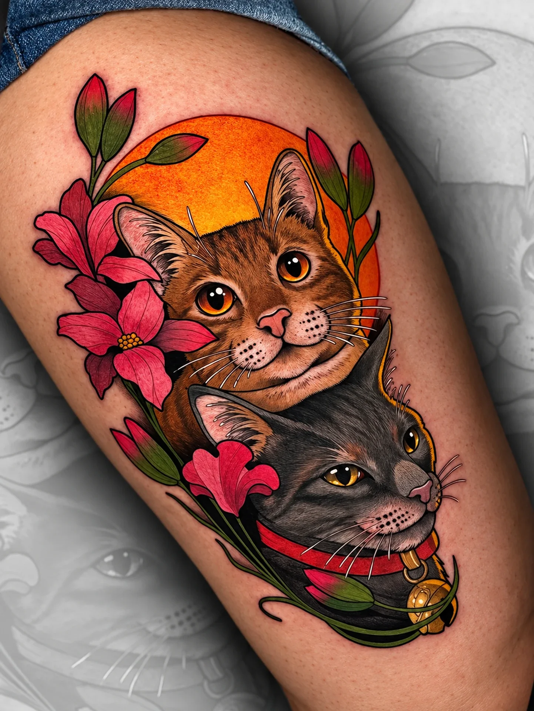
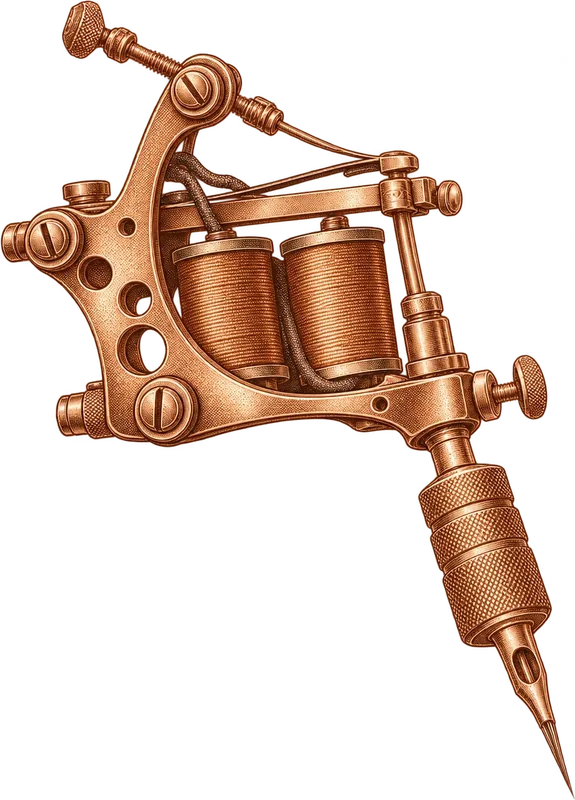

Luis Santos
Neotradicional · Neojaponés · Anime
Color vibrante, línea gruesa y personajes con vida propia. Del neojaponés al anime, pasando por el neotradicional.
Ver su trabajoUn estudio con cuatro artistas y cuatro maneras de entender la piel: neotradicional, realismo, fine line y piercing. Todo diseñado contigo, de principio a fin.


El estudio
En La Cara Norte no hay catálogo cerrado. Escuchamos tu idea, la dibujamos contigo y la llevamos a la piel con el artista cuyo estilo mejor la defiende. Tatuaje, piercing y graffiti bajo el mismo techo, en pleno barrio de La Palomera.
Lo que hacemos
Del color más intenso a la línea más fina. Elige tu estilo y descubre quién lo trabaja.
El equipo
Cada uno con su estilo, su portfolio y su manera de trabajar. Entra en su página para ver más trabajos y pedirles cita.
Neotradicional · Neojaponés · Anime
Color vibrante, línea gruesa y personajes con vida propia. Del neojaponés al anime, pasando por el neotradicional.
Ver su trabajo
Realismo · Black & grey · Graffiti
Realismo en blanco y negro con volumen, retratos y piezas completas. También dibuja y pinta graffiti.
Ver su trabajo
Fine line · Dotwork
Línea fina, delicadeza y detalle. Flores, animales, símbolos y diseños pequeños que se sienten tuyos.
Ver su trabajo
Piercing · Joyería · Gemas dentales
Piercing de orejas, nariz, ombligo, ceja y microdermal, con joyería en oro y gemas dentales.
Ver su trabajoEn movimiento
Reels de nuestros artistas. Pulsa play y míralos sin salir de la web.

Cómo trabajamos
Escríbenos por WhatsApp con tu idea, referencias, zona y tamaño aproximado.
El artista adecuado prepara una propuesta y te orienta sobre tiempo y presupuesto.
Fijamos día y hora dentro del horario del estudio. En julio y agosto, solo con cita.
Sesión tranquila, material de un solo uso y consejos claros para cuidarlo después.
Y además
Un par de cosas que quizá no esperabas encontrar en un estudio de tatuajes.
2.464 seguidores y trabajo nuevo cada semana: tatuajes, piercings, huecos libres y visitas de artistas invitados.
Seguir en Instagram

Visítanos
C. Posadera Aldonza, 3 · 24007 León. Atendemos de lunes a viernes de 10:00 a 18:00. En julio y agosto, únicamente con cita previa.
| Lunes | 10:00 – 18:00 |
| Martes | 10:00 – 18:00 |
| Miércoles | 10:00 – 18:00 |
| Jueves | 10:00 – 18:00 |
| Viernes | 10:00 – 18:00 |
| Sábado | Cerrado |
| Domingo | Cerrado |
Pide tu cita
Escríbenos por WhatsApp con tu referencia, la zona del cuerpo y el tamaño aproximado. Te respondemos dentro del horario del estudio.